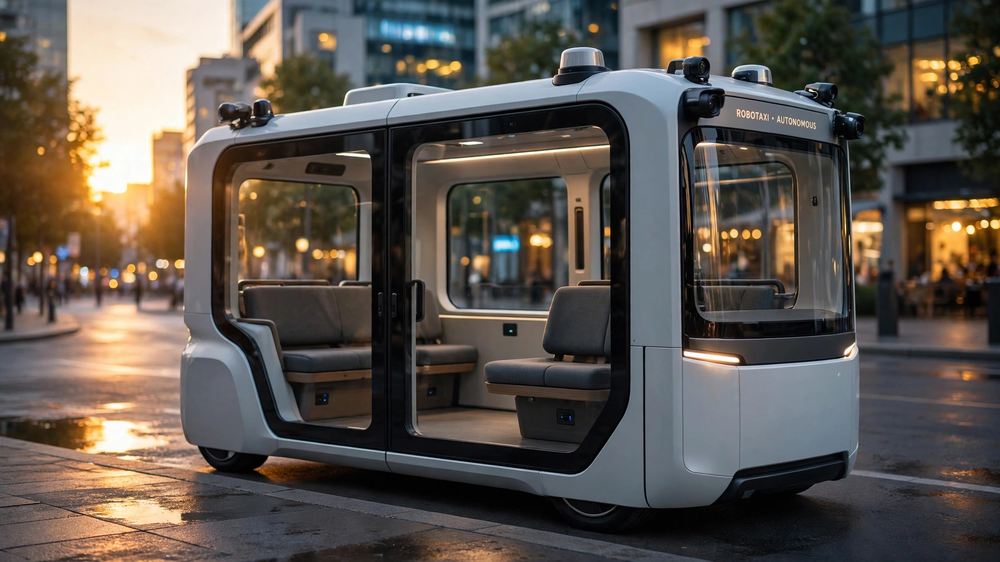

🚗 Transport
Amazon's Zoox Just Won the First US Approval to Charge for Robotaxi Rides Without a Steering Wheel. We Ran the Math on What 2,500 Vehicles Can Actually Earn.
NHTSA's exemption lets Zoox deploy purpose-built robotaxis commercially for the first time in US history, but caps the fleet at 2,500 units per year while the factory can build 10,000. We modeled the revenue ceiling, the unit economics gap with Waymo, and the $4 billion question Amazon still cannot answer.

Two thousand five hundred. That is how many purpose-built, steering-wheel-free robotaxis the National Highway Traffic Safety Administration will allow Amazon's Zoox to deploy commercially on US public roads each year for the next two years, according to an exemption announced July 30. No other company has received this approval. No purpose-built autonomous vehicle without human controls has ever been cleared to charge passengers for rides in the United States. A decade of regulatory paralysis just ended, and what emerged is a boxy electric carriage with two rows of inward-facing seats, a top speed of 75 miles per hour, and not a single pedal, a vehicle so unlike anything NHTSA was designed to regulate that the agency had to invent a new process to say yes.
"Today marks an important milestone for Zoox and the future of autonomous mobility," CEO Aicha Evans told the Wall Street Journal. Zoox will begin charging for rides in Las Vegas next month, with additional markets to follow. Over 500,000 passengers have already ridden free.
Five hundred thousand free rides is an impressive number, but it is also zero revenue from a subsidiary that Amazon acquired six years ago for $1.3 billion in cash and has spent billions more developing since. We spent the weekend building the revenue model that explains why the exemption is simultaneously the best news Zoox has ever received and a ceiling on everything that comes next.
What the Exemption Actually Says
NHTSA Administrator Jonathan Morrison was precise about the terms. Zoox gets to deploy up to 2,500 vehicles per year, for two years. The vehicles cannot be sold to the public. All remote operators must be located in the United States. Zoox must publish maps showing where its robotaxis operate. The agency will impose additional reporting requirements covering crashes, inappropriate stops, and software issues, and it reserves the right to revoke the exemption entirely.
"We can say pretty clearly that the systems in place on the Zoox exceed the equivalent performance requirements of a compliant vehicle," Morrison told Reuters. "But we still want to make sure that the automated driving system will operate appropriately."
That second sentence carries weight. Days before granting the exemption, Morrison issued a letter telling AV developers to "immediately focus" on fixing what NHTSA identified as "a clear pattern of driverless AVs interfering with law enforcement and other first responders," citing incidents of robotaxis driving around stopped school buses, freezing on flooded roads, and rolling into active construction zones as evidence that the technology was not yet behaving safely around emergency personnel. After the exemption was granted, Zoox recalled its entire fleet of 105 autonomous vehicles to update software that might not detect heavy smoke in active emergencies. Approval came with a leash.
The Revenue Ceiling Nobody Is Talking About
Zoox's Hayward, California manufacturing facility can produce up to 10,000 robotaxis per year at full capacity, with a stated production rate of 100 vehicles per week. NHTSA will let Zoox deploy 2,500. That is a 75% production capacity waste imposed by regulatory fiat, and it sets an absolute ceiling on first-year revenue that no amount of operational excellence can breach.
We modeled that ceiling using Waymo's publicly available ridership data as the utilization benchmark.
Waymo currently operates approximately 3,000 to 3,500 robotaxis across 10 US cities, providing 500,000 paid rides per week as of March 2026. That works out to roughly 167 rides per vehicle per week, or about 24 rides per day per vehicle. At an average fare of $15 to $17 per ride (per Sacra revenue data, April 2026), Waymo generates an annualized revenue run rate of approximately $355 million.
Apply Waymo's utilization rate to a maxed-out Zoox fleet:
| Scenario | Fleet Size | Rides/Day | Revenue/Year (at $16 avg fare) |
|---|---|---|---|
| Current Zoox fleet | ~100 | ~2,400 | ~$14M |
| Year 1 ramp (mid-case) | ~750 | ~18,000 | ~$105M |
| NHTSA cap (steady state) | 2,500 | ~60,000 | ~$350M |
| If uncapped (full factory) | 10,000 | ~240,000 | ~$1.4B |
The gap between $350 million and $1.4 billion is the regulatory tax on Zoox's business model, a gap imposed not by competition or technology limits but by the sheer bureaucratic reality that NHTSA will not let a company with 105 vehicles and a brand-new exemption flood the roads with ten thousand more. At full factory output, Zoox could challenge Waymo's revenue in a single year. Under the exemption, the factory sits three-quarters idle.
Three important caveats on these projections. First, Waymo took years to reach its current utilization of 24 rides per vehicle per day. Zoox, starting from zero paid rides, will almost certainly underperform that benchmark initially. Second, the $16 average fare assumes urban ride-hailing pricing comparable to Waymo's markets. Zoox's Uber partnership in Las Vegas may yield different pricing dynamics. Third, "rides per day" masks enormous variation by city, time, and route density. Waymo's San Francisco vehicles likely run at much higher utilization than its newer Austin deployment.
The $4 Billion Question
Amazon paid $1.3 billion in cash for Zoox in June 2020. At the time, deal documents reviewed by Reuters showed Zoox was burning more than $30 million per month and projected it would run out of cash by July 2020.
Assume the burn rate held roughly constant, which is conservative given that Zoox has since built a 220,000-square-foot production facility, expanded testing to 10 cities, grown its workforce, and manufactured over 100 prototype vehicles, each one a custom piece of rolling hardware that does not exist anywhere else on Earth. At $30 million per month for 73 months (July 2020 through July 2026), operating costs alone total $2.19 billion. Add the $1.3 billion acquisition price. Add the Hayward factory, which Amazon has not priced publicly but which comparable automotive manufacturing facilities typically cost $150 to $300 million. Add capital expenditures for the test fleet, the sensor supply chain, the remote operations infrastructure. A reasonable all-in estimate: $4 billion to $5 billion.
At the NHTSA-capped revenue ceiling of $350 million per year, assuming maximum utilization and zero operating costs, Zoox would need over a decade to recoup what Amazon has likely spent building it, and since operating costs for a fleet of purpose-built robotaxis staffed by remote operators across multiple cities are emphatically not zero, the real payback horizon is considerably worse.
Purpose-Built vs. Retrofit: The Unit Economics Divergence
The robotaxi industry has split into three architectural camps, and their economics diverge sharply.
| Operator | Vehicle | Est. Per-Unit Cost | Human Controls | Fleet (2026) | Status |
|---|---|---|---|---|---|
| Zoox (Amazon) | Purpose-built robotaxi | Not disclosed | None | ~100 (2,500 cap) | Commercial exemption granted |
| Waymo (Alphabet) | Modified Jaguar I-PACE | $150K+ est. | Retained but unused | ~3,000-3,500 | Operating commercially |
| Tesla | Model Y / Cybercab | $45K (MY) / TBD | MY: yes / Cybercab: none | ~1,500 projected | Pilot phase |
| Pony.ai | Toyota bZ4X | ~$33K (70% BOM reduction) | Retained | 3,000 target | Unit profitable in Shenzhen |
A Bank of America Global Research report from November 2025 modeled the breakeven math: at a per-vehicle cost of $75,000, four-year depreciation, and 54,000 miles driven annually, the fare per mile needs to hit $1.95 to maintain a 10% margin. Drop the vehicle cost to $45,000 and the breakeven line falls to $1.53 per mile.
Zoox has not disclosed its per-vehicle production cost, but purpose-built autonomous vehicles with custom sensor suites, bidirectional drivetrains, and carriage-style cabins that have never been manufactured at scale before are categorically not $45,000 products. If the per-unit cost exceeds $100,000, which is conservative for a low-volume purpose-built EV with no economies of scale, the breakeven fare per mile climbs above $2.50, roughly what Uber and Lyft rides in Las Vegas already cost per mile during normal demand.
The counterexample is striking. Pony.ai announced in March 2026 that its seventh-generation robotaxi achieved monthly per-vehicle profitability in Shenzhen, China, after reducing the autonomous driving kit's bill of materials by 70% from the prior generation. Pony.ai uses a mass-market Toyota bZ4X as the base platform. Its unit economics work because it starts with a cheap car.
Zoox starts with an expensive one it designed from scratch. That is either visionary or ruinous, and the exemption does not tell you which.
What the Exemption Means for Everyone Else
The significance of the Zoox approval extends well beyond one company's revenue model. NHTSA simultaneously announced plans to develop the first-ever national regulatory standards for automated driving systems, replacing the current patchwork of state and local rules. Morrison told Reuters he expects to complete these standards by the end of the Trump administration.
That timeline matters for Tesla. The Cybercab, announced in 2024 as a purpose-built robotaxi without human controls, has no disclosed path to NHTSA exemption. Tesla has started producing the vehicle but has not publicly filed for the same 555 exemption that Zoox spent years pursuing. If national AV standards are finalized before Tesla files, the Cybercab could launch under the new framework rather than the exemption process, potentially avoiding the 2,500-unit cap entirely.
It also matters for Waymo, which has operated commercially for years using vehicles that retain steering wheels and brake pedals even though no human sits behind them. Waymo's modified Jaguar I-PACE units technically comply with existing FMVSS requirements because the human controls are present, making the exemption unnecessary. But Waymo's next-generation vehicles, built on the Zeekr Ojai platform, could follow the purpose-built path if the regulatory framework shifts.
And it matters for the broader NHTSA rulemaking. On June 26, the agency proposed eliminating the manual brake pedal requirement for vehicles designed exclusively for automated driving, while maintaining identical stopping-distance performance standards. If that rule is finalized, the exemption process becomes unnecessary for future purpose-built AVs, and the 2,500-unit cap dissolves. The Zoox exemption may be the last of its kind.
The Strongest Case Against
The most uncomfortable fact about the Zoox approval is the safety record that immediately preceded it. Days after the exemption, Zoox recalled all 105 of its autonomous vehicles. All of them. The software might not detect heavy smoke near active emergency scenes. Earlier in July, NHTSA's administrator publicly warned the entire AV industry about "a clear pattern" of interfering with law enforcement and first responders. Before that, in May 2025, Zoox recalled 270 vehicles after a crash in Las Vegas where the system misjudged a perpendicular approach.
The recalls are small because the fleet is small, and a hundred and five vehicles is a rounding error by automotive standards, but it is also every single purpose-built Zoox robotaxi in existence. A 100% fleet recall is a 100% fleet recall regardless of absolute numbers, and scaling from 105 to 2,500 vehicles while maintaining safety margins is a materially different engineering and operational challenge than anything the company has attempted.
The purpose-built architecture that makes Zoox unique also makes it uniquely exposed. Waymo discovers a software bug? It updates vehicles that still have steering wheels and brake pedals as a fallback, vehicles where a human could theoretically intervene even though none sits behind the controls. Zoox discovers a software bug? There is no fallback, no pedal to grab, no wheel to turn. The autonomous system is the only system. Morrison acknowledged this when he said NHTSA retains the ability to revoke the exemption "if we see major safety issues." That conditional hangs over the entire business plan like a blade.
Limitations
Our revenue model uses Waymo's current utilization metrics as a proxy for what Zoox might achieve, but Zoox operates in fewer cities with a different vehicle form factor, different routing capabilities, and different consumer awareness. The utilization assumptions are best-case projections, not predictions. Our estimate of Amazon's total Zoox investment ($4 to $5 billion) uses the disclosed $30 million monthly burn rate from 2020 deal documents and assumes roughly constant spending, which is imprecise given that Amazon does not break out Zoox operating costs in its financial filings. The per-unit vehicle cost comparison uses Waymo's modified I-PACE as a benchmark, but both Waymo and Zoox guard their actual per-vehicle production costs closely. Finally, the regulatory analysis assumes the current NHTSA rulemaking trajectory continues, which is subject to political and administrative change.
What You Can Do
If you live in Las Vegas: Download the Zoox app now. When paid service launches next month, you will be among the first humans on Earth to pay for a ride in a vehicle that was designed from day one to never have a driver. The experience itself, two rows of inward-facing seats, no steering wheel, no windshield in the traditional sense, is unlike any taxi, Uber, or bus you have ridden. Whether the business works is Amazon's problem. The ride is yours.
If you are evaluating AV investments: Watch for three specific numbers that neither Zoox nor Amazon has disclosed: per-vehicle production cost, cost per ride (including remote operator overhead, fleet maintenance, insurance, and mapping updates), and the ramp rate from 100 vehicles to 2,500. If Zoox cannot reach 1,000 deployed vehicles by end of 2026, the revenue math pushes profitability into the 2030s at the earliest. Ask for the unit economics, not the milestone press release.
If you work in transportation policy: The proposed brake pedal rule elimination is more consequential than the Zoox exemption itself. If finalized, it would create a permanent, scalable regulatory pathway for purpose-built AVs without the 2,500-unit annual cap. Comment periods for NHTSA proposed rulemakings are public and your input shapes the final rule. The docket number for the FMVSS No. 135 update is on the Federal Register.
The Bottom Line
Zoox just became the first company in US history to receive federal approval to charge passengers for rides in a vehicle with no steering wheel, no brake pedals, and no human controls of any kind. That sentence would have been regulatory science fiction five years ago. It is now a fact, bounded by a fleet cap of 2,500 vehicles per year, a leash of additional safety reporting, and the ever-present threat of revocation. The regulatory milestone is real. The business case is not yet proven. Amazon has likely spent $4 to $5 billion building a robotaxi that can produce at quadruple the rate its regulator will allow it to deploy, and even at maximum deployment the revenue ceiling falls well short of what the investment demands. The exemption is the starting gun, not the finish line. And the race it starts is not against Waymo or Tesla. It is against the spreadsheet that says, at 2,500 vehicles per year, the math does not yet work.